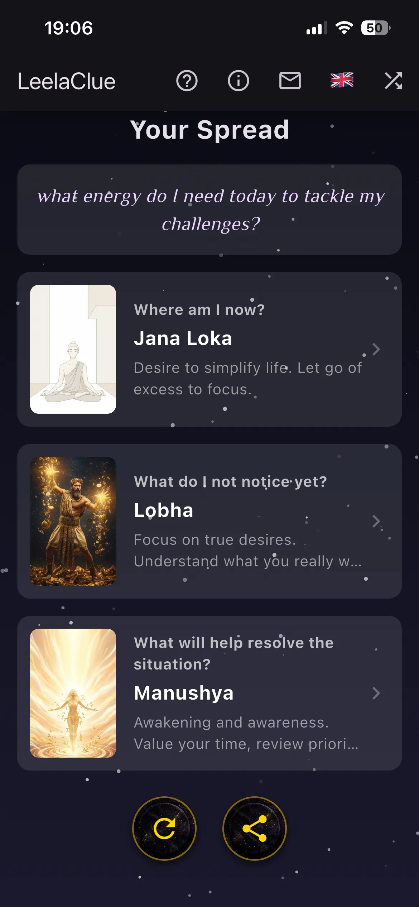
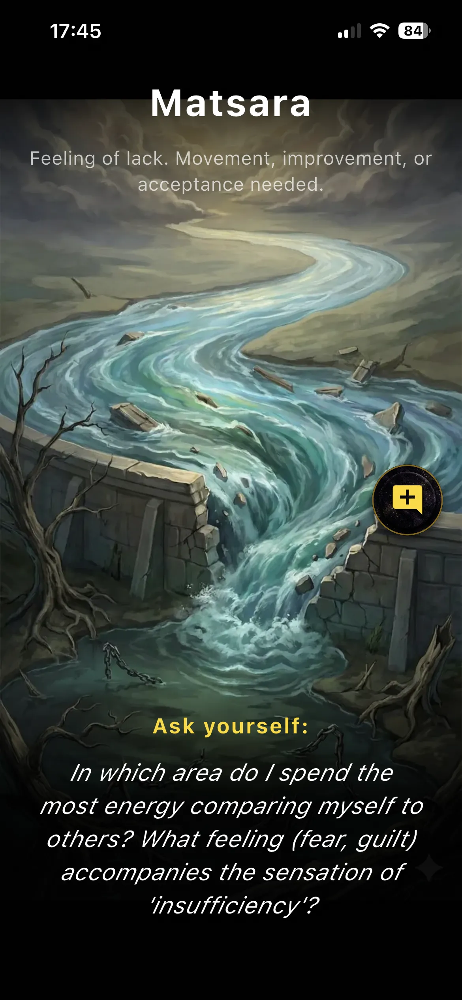
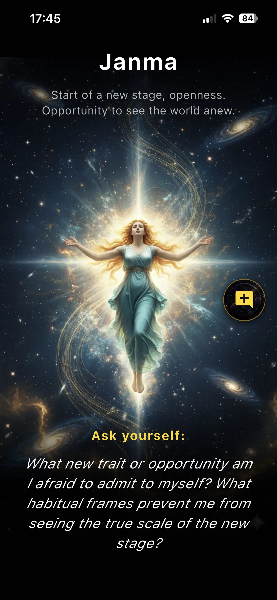
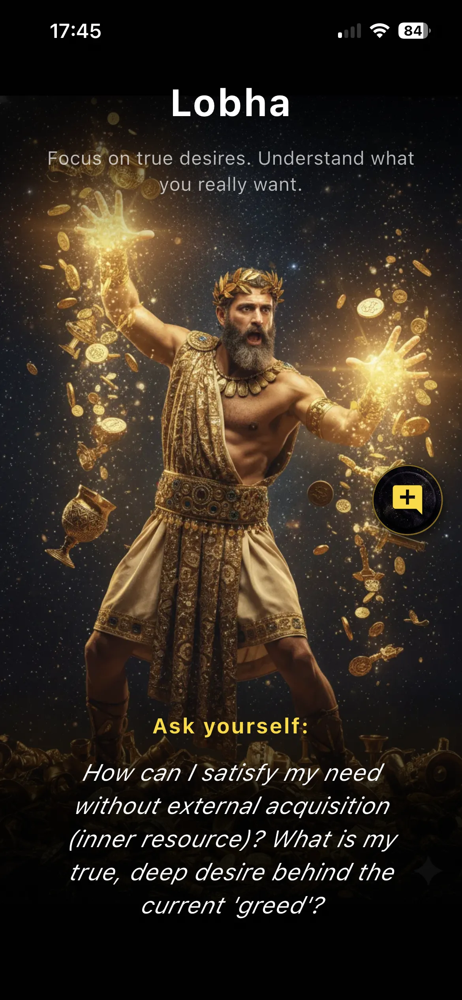
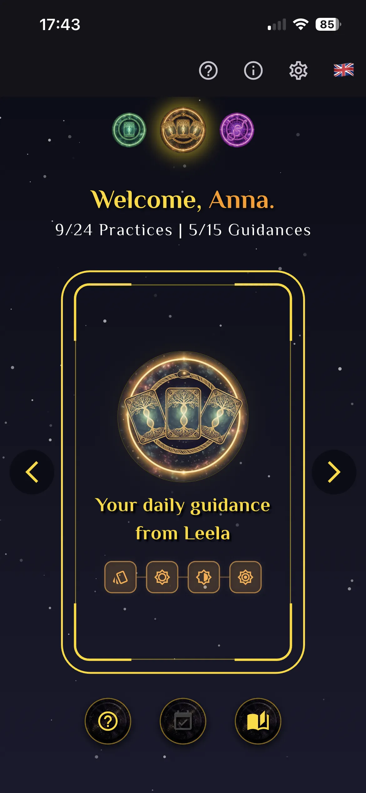
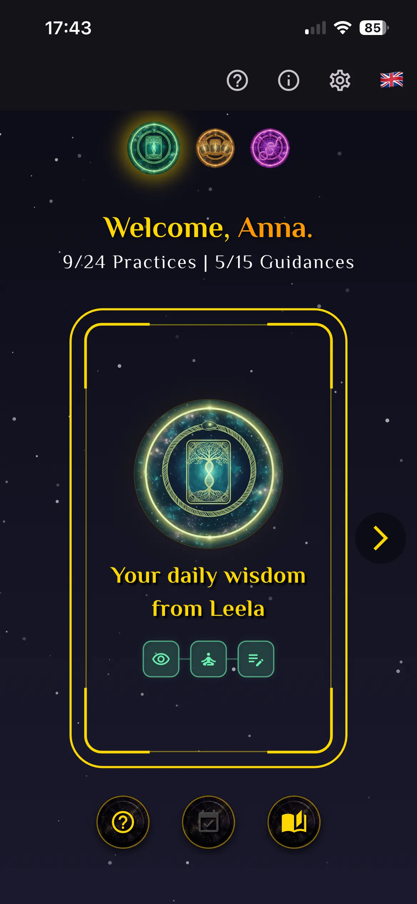
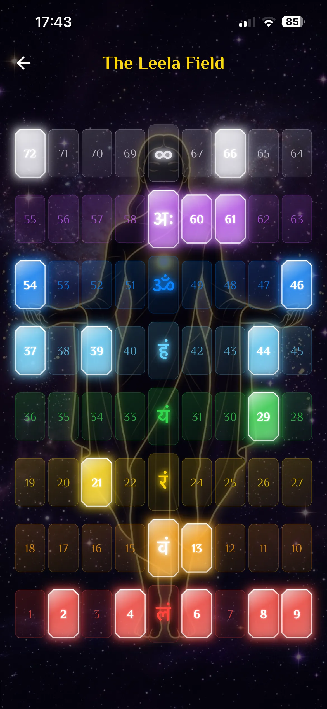
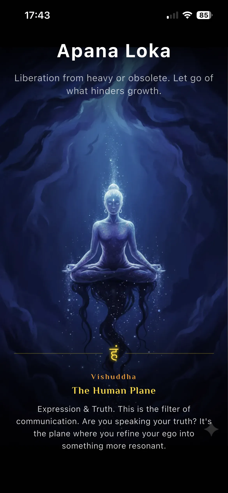
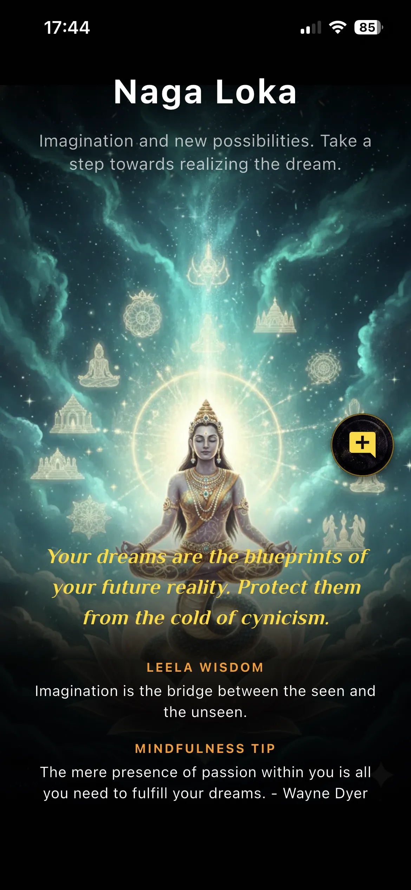
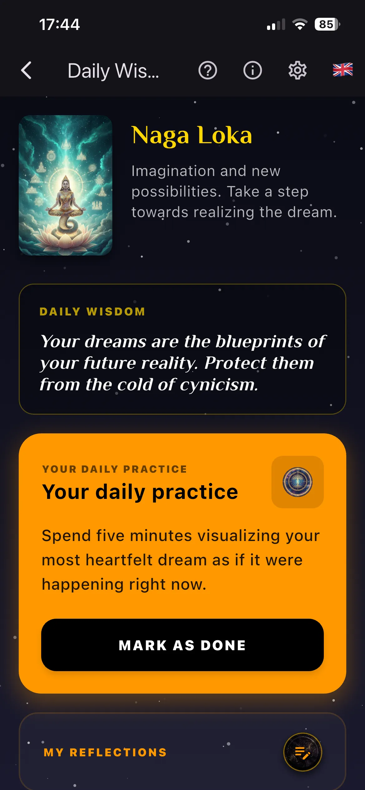

Wenn Denken allein nicht mehr weiterhilft...
Wir verfangen uns oft in endlosen Gedankenschleifen – wir spielen "Was-wäre-wenn"-Szenarien durch, analysieren Entscheidungen so lange, bis sie ihre Bedeutung verlieren, oder spüren einen tiefen Widerstand, den wir nicht benennen können. Wenn dich eine Situation nachts wach hält, liegt das meist nicht an fehlenden Fakten; es liegt daran, dass deine Intuition unter mentalem Lärm begraben ist. Ohne einen Weg, klar zu sehen, laufen wir auf Autopilot und treffen unsere täglichen Entscheidungen blind.
Unsere Mission
LeelaClue ist eine einzigartige Brücke zwischen psychologischer Schattenarbeit und der uralten Weisheit des Spiels Leela. Unsere Mission ist es, dir zu helfen, dein Gedankenkarussell zu stoppen und deine wahren inneren Gefühle zu kristallisieren. Wir bieten eine Struktur für tiefe Selbstreflexion, die deine Intuition befreit und es dir ermöglicht, deine ehrlichen Wünsche zu verstehen und sie in einen Pfad für echte Selbstverbesserung zu verwandeln.
Für wen ist das?
Dies ist für jeden, der an einem Scheideweg steht – egal, ob du deine Karriere hinterfragst, eine Veränderung in einer Beziehung durchläufst oder eine Lücke zwischen dem, wer du bist, und dem, wer du sein möchtest, spürst. Es ist für Menschen, die es leid sind, nach Antworten in den Meinungen anderer zu suchen, und bereit sind, echte Verantwortung zu übernehmen, indem sie nach innen schauen.




Das St·O·R-Modell
Das Herzstück von LeelaClue ist das St·O·R-Modell – ein Werkzeug zur Schattenarbeit, mit dem du jede Situation aus drei Perspektiven analysieren kannst: State, Obstacle (Hindernis) und Resource. Um zu verhindern, dass die Analyse vorhersehbar wird, nutzen wir Synchronizität, indem wir zufällige Karten aus den 72 Leela-Zuständen ziehen. Diese unerwarteten Blickwinkel erzwingen eine ehrliche Reflexion aus Winkeln, die dein Ego von sich aus niemals wählen würde.
St — State: Wo stehe ich gerade?
Deine erste Karte spiegelt deinen aktuellen inneren Ausgangspunkt wider – was tatsächlich unter der Oberfläche passiert, bevor dein Ego die Chance hat, die Geschichte zu manipulieren.
O — Obstacle (Hindernis): Was übersehe ich?
Die zweite Karte identifiziert deinen verborgenen Schatten oder blinden Fleck. Dies ist der schwierigste Schritt, da unser natürlicher istinkt darin besteht, die unbequeme Ehrlichkeit zu vermeiden, die nötig ist, um zu sehen, was uns wirklich zurückhält.
R — Resource: Was wird helfen?
Die dritte Karte weist auf die eine Qualität oder Handlung hin, der du tatsächlich vertraust. Es ist kein Rat von außen, sondern dein eigener innerer Kompass, der lesbar gemacht wurde und einen klaren Weg nach vorne aufzeigt.
Durch die Analyse deiner Situation aus diesen drei Blickwinkeln gewinnst du tiefe Klarheit über die verborgenen Gefühle rund um deine Frage. Dieser Prozess führt oft zu einem Moment unerwarteter Erkenntnis und offenbart eine Wahrheit, die dein rationaler Verstand möglicherweise übersehen hätte.

Sechs Schritte zur Meisterschaft der Praxis
Die St·O·R-Legung funktioniert nur, wenn du den vollständigen Zyklus durchläufst – von der ehrlichen Frage bis hin zu einer täglichen Mikro-Handlung, die du tatsächlich umsetzen kannst.
Selbstklärung · Der Fokus – Destilliere deine eigentliche Frage. Nicht „Soll ich X tun?“, sondern „Wovor habe ich Angst, wenn ich es nicht tue?“ Verwandle äußere Fragen in innere.
Synchronizität · Das Ziehen – Ziehe drei Karten, die die St·O·R-Perspektiven repräsentieren. Zufall umgeht die Verteidigungsmechanismen des Egos – die 72 Leela-Zustände erzwingen einen Blickwinkel, den dein rationaler Verstand niemals wählen würde.
Persönliche Interpretation · Innerer Dialog – Verbinde jedes St·O·R-Symbol mit deiner spezifischen Situation. Nicht die Lehrbuch-Bedeutung zählt, sondern deine Bedeutung, dein Schmerzpunkt, dein Muster.
Fixierung · Das Tagebuch – Schreibe es auf. Schattenarbeit kann nicht wirklich gelingen, ohne deine Gedanken zu externalisieren. Erkenntnisse ohne Dokumentation verfliegen bis zum nächsten Tag. Dein Reflexions-Tagebuch nimmt dich in die Pflicht.
Selbstanalyse · Reflektierende Praxis – Widme dich dem, was der Forscher Donald Schön „Reflektierende Praxis“ nannte. Analysiere deine notierten Reflexionen für jede Karte in der St·O·R-Legung, um den Kern der Erkenntnis zu extrahieren. Erfahrung allein führt nicht zu Lernen – nur gezielte Reflexion schafft Wachstum.
Persönliche Disziplin · Die Übung – Übersetze die Kernbotschaft deiner Analyse in eine hyper-spezifische Mikro-Handlung. Die Übung muss deine Entdeckung direkt im täglichen Leben verankern. Nicht „ruhiger sein“ – sondern „drei Minuten langsames Atmen, bevor ich meine E-Mails öffne.“

Fallstudie: Annas Reise
Um zu verstehen, wie das St·O·R-Modell ein echtes menschliches Problem entwirrt, betrachten wir das Beispiel von Anna. Sie drehte sich wochenlang im Kreis und hatte Angst davor, ihren sicheren Konzernjob aufzugeben, um sich als Freelancerin selbstständig zu machen. Sie formulierte es als Verwirrung: „Ich weiß einfach nicht, was ich tun soll.“
Die St·O·R-Legung
- St — State (Antariksha – Der Übergang): Anna erkannte, dass ihre Karriere im Unternehmen innerlich bereits abgeschlossen war. Sie hielt nur aus Gewohnheit an einer Phase fest, was ihr das lähmende Gefühl gab, „in der Luft zu hängen“.
- O — Obstacle (Mada – Einengende Rollen): Die Karten offenbarten, dass sie nicht wirklich verwirrt war. Sie hielt krampfhaft an ihrer Identität mit dem „festen Gehaltsscheck“ fest und hatte schreckliche Angst davor, vor ihren Eltern als unverantwortliche Versagerin dazustehen.
- R — Resource (Swarga Loka – Innere Führung): Statt nach weiteren logischen Sicherheitsnetzen zu suchen, musste Anna ihr inneres Vertrauen stärken, indem sie einen konkreten Schritt unternahm, der ihre Fähigkeiten bestätigte.
Der Durchbruch
Durch die Analyse ihrer Reflexionen wurde klar, dass „Verwirrung“ nur ein Schutzschild war, um das Unbehagen zu vermeiden, aus einer vertrauten Rolle herauszutreten.
Ihre tägliche Disziplin: Anna kündigte nicht sofort. Stattdessen bestand ihre Mikro-Handlung darin, jeden Morgen 15 Minuten lang an ihrem Businessplan zu arbeiten, bevor sie ihre geschäftlichen E-Mails las. Diese kleine Grenze half her beim Übergang von der Person, die sie war, zu der Person, die sie wurde.





Lerne LeelaClue kennen
LeelaClue wandelt das theoretische St·O·R-Modell in ein praktisches Werkzeug für deine tägliche Schattenarbeit um. Anstatt dich ausschließlich auf teure Besuche beim Psychologen zu verlassen, bietet die App eine strukturierte Methodik, um deine verborgenen Muster zu konfrontieren und eigenständig Klarheit zu finden.
Der Kern: Täglicher Hinweis
Die Umsetzung des St·O·R-Modells und der Reflexionspraxis nennen wir Täglicher Hinweis. Diese Funktion ist direkt über den Hauptbildschirm zugänglich und führt dich durch die 3-Karten-Legung – State, Obstacle und Resource – wodurch der gesamte Sechs-Schritte-Zyklus leicht nachvollziehbar wird.
Weitere Instrumente
- Tägliche Weisheit – Erhalte eine einzelne Karte aus den 72 Leela-Zuständen, um deine Intention für den Tag zu setzen, inklusive einer spezifischen Achtsamkeitsübung.
- Reflexions-Tagebuch – Ein dedizierter Raum, um deine Gedanken aufzuschreiben und zu analysieren. Deine vergangenen Legungen werden gespeichert und sind jederzeit einsehbar, sodass du wiederkehrende Muster in deiner Psyche verfolgen kannst.
- Das Leela-Feld – Erkunde alle 72 Bewusstseinszustände des alten vedischen Systems. Es bietet die vollständige Karte der Selbsterkenntnis und hilft dir, die „ganze Geschichte“ deiner inneren Reise zu sehen.
- Slow-Tech-Philosophie – Nur ein Hinweis und eine Weisheitskarte pro Tag. Kein endloses Scrollen. Tiefe Integration, bevor die nächste Erkenntnis kommt.